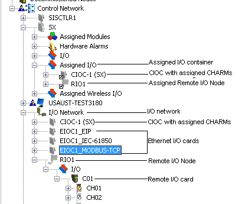

The DeltaV I/O network
The DeltaV I/O Network contains CHARM I/O Cards (CIOC) and CHARMs, Remote I/O Nodes and remote I/O cards and Ethernet I/O Cards (EIOCs). The I/O Network must be enabled as a DeltaV System Preference before it is available to the DeltaV system. To enable the I/O Network, click .
After the I/O Network is enabled, it appears under the Control Network in the DeltaV Explorer. CHARM I/O cards, Remote I/O Nodes, and EIOCs are added to the DeltaV Explorer hierarchy from the I/O Network. CHARMs, which are contained by a CIOC, and remote I/O cards, which are contained by a Remote I/O Node, are then assigned to controllers in the control network. The following image shows a DeltaV Explorer hierarchy with an I/O Network containing a CIOC with assigned CHARMs, a Remote I/O Node and remote I/O card, and EIOCs. The Assigned I/O container holds a CIOC with assigned CHARMs and an assigned Remote I/O Node.
